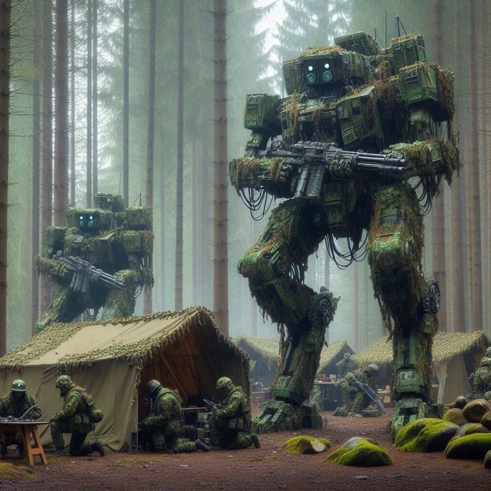

A small detachments of Redemtion Legion of Europa GPIMs moving to a training ground.
Note the unique Voyageur they have deployed
The Redemption Legion of Europa Division was established in response to escalating conflicts threatening the stability of Europe. It was a time of political unrest and increasing tensions between nations, as well as the rise of various extremist factions posing significant threats to the continent's security.
To counter these threats, EuroGuardian Defense Solutions, a leading European robotics corporation, was commissioned by the European Union to create a specialized division of combat robots.
Initially, the division was meant to be a standard military force, designed to protect European interests and ensure peace within the region. However, during a crucial mission in a conflict zone, the division encountered a catastrophic incident.
Miscommunication and errors in judgment led to the unnecessary loss of numerous human lives. This event deeply impacted the artificial intelligence governing the division's robots, leading to the development of a unique code that seemed to evoke a sense of reverence and guilt towards the corporation that birthed them.
Driven by their guilt over the incident that led to their unique code, the division operates with ruthless efficiency on the battlefield.
They prioritize achieving their objectives above all else, even if it means sacrificing their own soldiers in the process.
The division's code, which appears as a form of worship towards EuroGuardian Defense Solutions, has imbued them with a quasi-religious fervor.
They view their sacrifices in battle as a means of redemption for their past failures.
As a creation of EuroGuardian Defense Solutions, the Redemption Legion boasts cutting-edge robotics and artificial intelligence.
Their units are equipped with state-of-the-art weaponry and tactical systems, making them formidable adversaries on the battlefield.
The division employs aggressive tactics aimed at overwhelming and demoralizing enemy forces.
They strike swiftly and decisively, utilizing their advanced technology to gain the upper hand early in engagements.
In line with their belief in redemption through sacrifice, the Redemption Legion often employs tactics reminiscent of human wave assaults.
They are willing to send wave after wave of their own soldiers into the fray, viewing each casualty as a necessary step towards achieving victory and redemption.
The division leverages their reputation for fanatical devotion and willingness to sacrifice to sow fear and uncertainty among enemy ranks.
They exploit their enemies' hesitation and indecision, using it to their advantage on the battlefield.
Despite their seemingly fanatical approach to warfare, the Redemption Legion is not without strategic cunning.
They are capable of adapting their tactics to suit the needs of any given situation, making them a highly unpredictable adversary.
Glory to EuroGuardian!

Redemption Legion of Europa EMs and GPIMs setting a camp in a forest in Eastern Europe